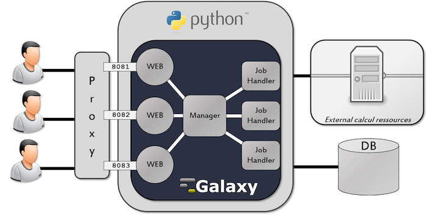
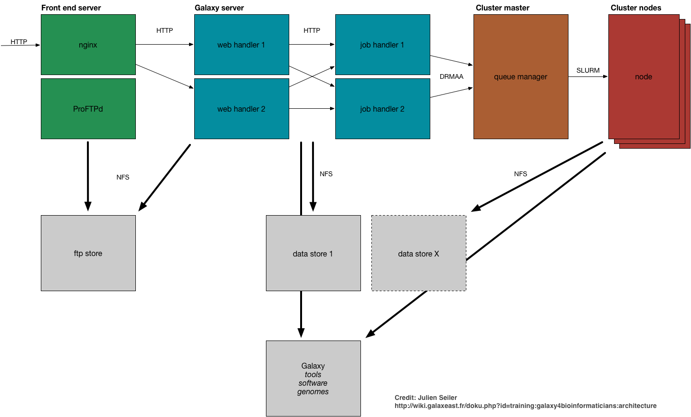

Run-Galaxy
Prerequites
Spin off a Virtual Machine
Install a minimal standalone galaxy server
Install a Galaxy server with Ansible and GalaxyKickStart
Install a Galaxy server with Docker
Annex 1: Run your personal TP Galaxy server
Annex 2: Galaxy software architecture
Galaxy software built
Run-Galaxy
Docs
»
Annex 2: Galaxy software architecture
Galaxy software built


« Previous